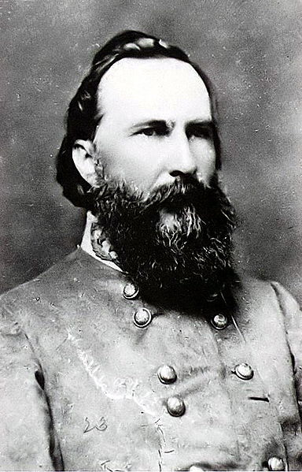
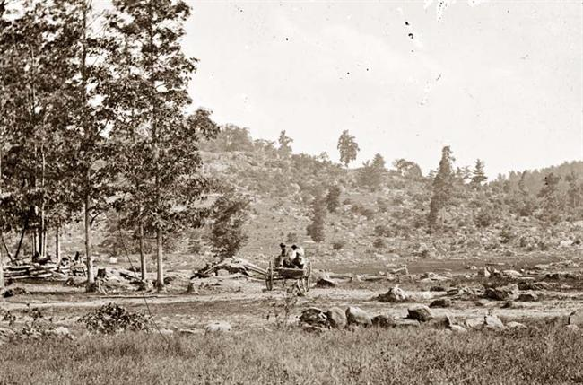
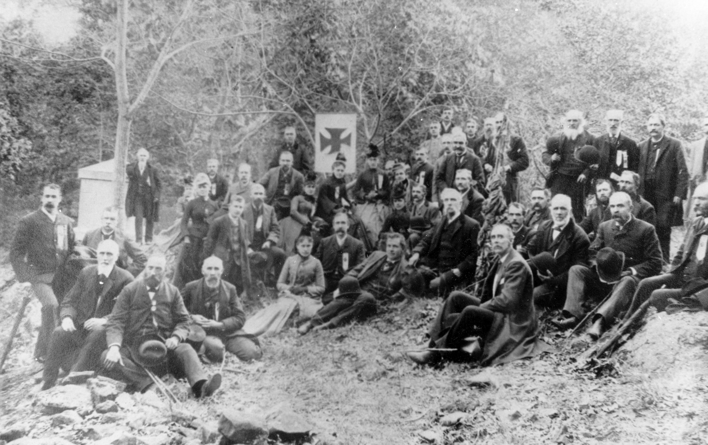

|
Shortly before midnight of July 1, 1863, Major General
George Meade arrived on the battlefield at Gettysburg to
face the greatest crisis of his 28-year military career.
Meade had not expected to give battle at Gettysburg, and as
Generals Winfield Scott Hancock and Oliver O. Howard briefed
him on the situation, the army commander realized how

Union commander Maj. Gen. George Gordon Meade had not anticipated
the Battle of Gettysburg, and was compelled to improvise a lot.
|
precariously close the Union had come to disaster on the
first day of fighting. Two of his seven corps--the First
and Eleventh--had suffered crippling losses, and while the
survivors held a formidable position on the high ground
south of Gettysburg, Meade knew that unless the bulk of his
army arrived by dawn, the Federals might not be able to
stave off the inevitable Confederate assault.
Urged on by their apprehensive commander, the footsore
Yankee soldiers trudged through choking Clouds of dust all
through the hours of darkness, northward to Gettysburg.
Although hundreds gave out along the way, by sunrise of July
2 Meade was able to plug the exhausted troops of his Second,
Third, Fifth, and Twelfth Corps into line. These new
arrivals enabled Meade to occupy the wooded slopes of Culp's
Hill, southeast of Gettysburg, and to extend his position
southward from Cemetery Hill along the low crest of Cemetery
Ridge. The Federal line now resembled a tight horseshoe
with its strength facing north and northeast, where most of
the Confederate troops were apparently concentrated. But
the Union left, at the end of Cemetery Ridge, was exposed
and thinly defended. Few of the weary Federals had strength
enough to pitch their tents, and most dropped down where
they stood in ranks, to snatch what sleep they could before
facing the terrible ordeal of battle.
If the first day at Gettysburg had been a near calamity
for the Union, it had proved to be a time of lost
opportunities for Robert E. Lee's Army of Northern Virginia.
Lee knew that if his troops were to defeat a numerically
stronger enemy, the second day's fight would require
strategic enterprise and tactical boldness. Audacity in the
face of extreme pressure was a hallmark of Lee's
generalship, and, rising from a fitful sleep an hour before
dawn, he set about implementing a daring offensive plan
reminiscent of his successful strategy at Second Manassas
and Chancellorsville.
Two of General Longstreet's three divisions had arrived
to bolster Hill's and Ewell's corps, and Lee intended to use
these fresh troops to strike at the vulnerable Union left.
As the morning wore on with little except an occasional
skirmish between the opposing forces, Lee explained his
strategy to his subordinate commanders.
From his position on Herr Ridge, west of Gettysburg,
Longstreet would march the divisions of Generals John Bell
Hood and Lafayette McLaws southward, using Seminary Ridge
as a natural barrier to screen the movement from enemy
observation. Once these troops were deployed west of the
Emmitsburg road, Longstreet would initiate an advance en
echelon--committing Hood's and McLaws' brigades in a
sequential series of triphammer attacks from south to north.
Once the last of Longstreet's men were under way, General
Richard H. Anderson's division of Hill's corps would
continue the en echelon attack, striking at the Union center
on Cemetery Ridge. In order to divert Federal troops from
the point of assault, Lee instructed General Ewell to launch
an attack on the Union right.
Longstreet, however, was
reluctant to attack without Major General George E.
Pickett's division, which was still a day's march away. In
fact, Longstreet favored a strategy that was markedly
different from Lee's--no attack at all. Longstreet wanted to
sideslip past Gettysburg, find more suitable ground to
defend, and force Meade to launch an attack, as General
Ambrose E. Burnside's troops had at Fredericksburg the
|

Because his Corps attacked later than they should have
on the second day of the Battle of Gettysburg, many Southerners blamed
Lt. Gen. James Longstreet for the South's defeat in the engagement (and even
in the war).
|
previous year, with disastrous results. But Lee was
determined to maintain the initiative, and as Longstreet
began to maneuver his divisions into place, he did so with a
reluctance that many officers felt verged on
insubordination. It was nearly 4:00 in the afternoon before
Longstreet was ready to begin his attack on the Federal
left, and by then the situation to his front had changed
dramatically. An entire Yankee corps had moved forward from
Cemetery Ridge to the Emmitsburg road, and lay directly in
Longstreet's path.
Like Lee, George Meade had also to contend with the
actions of an opinionated subordinate. When Major General
Daniel E. Sickles decided that his Third Corps was not
deployed on favorable ground, he took the liberty of
shifting his two divisions west to what he judged a better
defensive position. The combative politician-turned-soldier
established a new line running south along the Emmitsburg
road, across a crest marked by a peach orchard, and angling
southeastward on a ridge that terminated in a heap of
jumbled granite boulders called Devil's Den. By the time
Meade was fully aware of Sickles' action, it was too late to
readjust the line. Longstreet had begun his attack, and the
battle was joined.
Commencing with Hood's men on the Confederate right, each
of Longstreet's brigades surged forward in sequence, the en
echelon assaults smiting the Federals a series of
sledgehammer blows. Screaming the Rebel yell, wave after
wave of Confederate soldiers advanced into the smoke and
flame of battle that rolled steadily northward from Devil's
Den, across the corpse-strewn Wheat Field, to the Peach
Orchard salient. Sickles' men fought desperately but began
to give way, and the Southern Juggernaut rolled on toward
Cemetery Ridge.
As on the preceding day, the Confederates came up just
short of victory on July 2. Through the decisive actions of
junior officers, Federal soldiers secured the crucial
elevation of Little Round Top--an impregnable anchor for
Meade's left flank. A stalwart defense by General Hancock's
Second Corps maintained the Union hold on Cemetery Ridge,
and Ewell's belated assault on Culp's Hill was easily
repulsed. As darkness fell a desperate Rebel charge on
Cemetery Hill briefly pierced the defenses of the Union
Eleventh Corps but recoiled before a Yankee counterattack.
The bloodiest of the three days of battle at Gettysburg
ended in stalemate. If Robert E. Lee's army was to win a
decisive engagement on Northern soil, victory would have to
come on July 3.
Three miles south of
Gettysburg, the troops of Major General John B. Hood
launched the Confederate attack--the brigades of Generals
Evander M. Law and Jerome B. Robertson in the first wave,
Henry L. Benning and George T. Anderson in the second. The
left half of Robertson's line was savaged by the fire of
Captain James E. Smith's 4th New York Battery, four guns of
which were deployed on the crest above Devil's Den. One
shell exploded near General Hood as he rode behind the line
of battle; his left arm shattered, Hood was borne to the
rear.
Robertson's 1st Texas and 3d Arkansas pushed on across a
rocky, triangle-shaped field and into the woods of the Rose
Farm to the north. There they were brought to a bloody
standstill by the volleys of Brigadier General J. H. Hobart
Ward's Federal brigade.
The hulking, hard-drinking General Ward anchored the left
of the Third Corps line, and he was not about to yield his
ground without a fight. As Smith's New York battery
continued to rain shrapnel and canister on Robertson's
Texans, one of Ward's units, the 124th New York, mounted a
counterattack that pushed the Rebel forces back across the
triangular field.
The commander of the 124th, Colonel Augustus Van Horne
Ellis, stood in the stirrups of his white horse with
upraised sword, urging on his men, when a Confederate bullet
slammed into his forehead. Benning's Georgia brigade had
entered the fray, and with Ellis' death, the battle began to
turn in favor of the South. Devil's Den, and the guns of
Smith's battery, were overrun by the advancing tide of
gray-clad troops.
Hood's rightmost brigade, Evander Law's, extended beyond
the Yankee left and was able to push unhampered toward the
looming hills known as the Round Tops. Some of Law's
regiments swung left, moving up the valley of Plum Run to
strike at Devil's Den from the south. Other Confederate
units, among them the 15th and 47th Alabama, crested the
wooded height of Round Top and advanced toward the rocky
crest of Little Round Top to the north.
During a reconnaissance, Meade's chief topographical
engineer, Brigadier General Gouverneur Kemble Warren, had
been shocked to find Little Round Top bare of Federal
troops. If the Rebels gained the summit, their artillery
|

Little Round Top, where the Southern end of the Union
line was entrenched, was at the center of the fighting on the second day
of the Battle of Gettysburg.
|
would have a clear field of fire down the entire length of
the Union line. Warren and his staff officers began rushing
units of the Fifth Corps to the threatened point, and they
managed to get Colonel Strong Vincent's brigade in place
minutes before the Alabamians began scaling Little Round
Top's southern flank.
Vincent's line staved off repeated assaults in a grim
battle amid the boulder-strewn woods. Colonel William C.
Oates led the 15th Alabama in a charge against the Yankee
left but was checked and hurled back by the gritty defenders
of the 20th Maine. Inspired by the valor of their
colonel--former college professor Joshua Lawrence
Chamberlain--the Maine men repulsed the Alabamians at the
point of the bayonet. Chamberlain's desperate counterattack
broke the Rebel line scooped up dozens of prisoners, and
sent Rebels scurrying for cover.
Meanwhile, Gouverneur Warren had hastened troops of
Brigadier General Stephen H. Weed's brigade to the Summit of
Little Round Top, along with the Parrott guns of Lieutenant
Charles E. Hazlett's Battery D, 5th U.S. Artillery. These
reinforcements arrived in the very nick of time, just as the
4th and 5th Texas were about to overlap the right of
Vincent's brigade. Led by Colonel Patrick H. O'Rorke, a
young Irish-born West Pointer, the 140th New York plowed
into the Texans and unleashed a deadly fire at point-blank
range. O'Rorke, Vincent, Hazlett, and Weed were struck down
with mortal wounds, but their decisive actions secured
Little Round Top for the Union.
As the fighting
raged in the triangular field and Confederate troops began
their advance on Little Round Top, the last of John B.
Hood's brigades entered the fray. Brigadier General G. T.
Anderson, a veteran of the Mexican War whose combative
nature had earned him the nickname "Tige," led four Georgia
regiments through a wood lot on the Rose Farm and toward a
field of ripening wheat. Anderson's men were met with a
crashing volley and screaming artillery shells that
splintered the trees overhead. Within minutes Anderson's
attack had fragmented along a stone wall at the southern
edge of the Wheat Field.
Firing from the cover of the stone wall, the 17th Maine
decimated G. T. Anderson's Georgians. Private John Haley
noted that "we could see them tumbling around right lively."
Haley's unit was part of the brigade commanded by Brigadier
General Regis de Trobriand, a French aristocrat turned New
York newspaper editor. When ammunition began to give out,
de Trobriand exhorted his men to "hold them with the
bayonet, and the line held.
But trouble was brewing on de Trobriand's right, where
units of the Fifth Corps had been hastily positioned on a
wooded knoll west of the Wheat Field. Lafayette McLaws'
division had Joined the great en echelon advance, and
Brigadier General Joseph B. Kershaw's South Carolina brigade
--one of the finest units in Lee's army--was sweeping across
the Emmitsburg road. Federal artillery tore bloody gaps in
Kershaw's line, but the South Carolinians pressed forward,
linked up with Anderson's Georgians, and shoved the Federal
defenders from the wooded knoll.
Soon hundreds of blue-clad soldiers were falling back
through the trampled wheat, the Rebels in hot pursuit. But
victory was not to come so easily; Brigadier General John C.
Caldwell's division of the Second Corps had moved up at
Hancock's order to plug the widening gap. Two of Caldwell's
four brigade commanders were fatally wounded, but the
veteran troops--which Included the famous Irish
Brigade--forged ahead, and the Rebels gave way before them.
The corpse-strewn Wheat Field would remain only briefly
in union hands, however. McLaws hurled two more of his
brigades into what the field survivors would remember as a
"whirlpool of death," and again the Yankees fell back.
Caldwell appealed for help from the Fifth Corps, but the
handful of units that came to his aid were overwhelmed in
savage hand-to-hand combat. When Colonel Harrison Jeffords
of the 4th Michigan saw a South Carolinian seize the
regimental colors, he leaped at the Rebel with drawn sword
but was run through the body by a bayonet. In the frenzied
melee that followed, the Michiganders recovered their flag
and hauled the bloodied banner and their dying commander to
safety, Jeffords moaning, "Mother, mother, mother!"
At 6:30 P.m. McLaws launched his final blow against the
Union Third Corps. Four regiments from Mississippi--1,600
strong--headed directly for the Peach Orchard salient. These
soldiers were commanded by Brigadier General William A.
Barksdale, a stocky former congressman noted for his fiery
demeanor.
As General Barksdale rode among his men, waving his hat
and yelling encouragement, the Mississippians stormed past
the Sherfy farmhouse and barn, crossed the Emmitsburg road,
and crashed through the Yankee line. The Federal infant
were hurled back through the bullet-splintered peach trees,
and Yankee artillerymen frantically Timbered up their guns
and joined the chaotic withdrawal.
After clearing the Peach Orchard, some of Barksdale's
units charged to the east in pursuit of Union batteries
pulling back toward Cemetery Ridge. Others of Barksdale's
men swung north, striking the left flank of Brigadier
General Andrew A. Humphreys' division. At the same time
Humphreys' front--along the Emmitsburg road--was being
assailed by R. H. Anderson's division, the final hammer blow
of the en echelon assault. Humphreys' line crumbled; his
embattled units waged a fighting retreat to the north and
east.
General Sickles, whose Third Corps had paid a heavy price
for his ill-considered re-deployment, was himself a casualty
of the escalating debacle. A glancing blow from a
Confederate round shot ripped across Sickles' right leg,
nearly severing the limb at the knee. Demonstrating
characteristic aplomb, the general calmly puffed on a cigar
as he was carried to the rear.
As devastating
as Longstreet's assault had been to the Federal Third Corps,
the Confederates, too, had suffered heavy losses. Moreover,
many Confederate units had become hopelessly intermingled as
they pressed their advance eastward, through the woods that
flanked Plum Run. Brigades had fragmented and lost all
cohesion. With little more than an hour of daylight
remaining, Lee's Army of Northern Virginia had yet to gain
the crucial heart of the Yankee position--Cemetery Ridge.
Although Meade had provided little in the way of
supervision, most of his subordinates had ably risen to the
challenge. Little Round Top had been secured, and the
charge of the Fifth Corps' Pennsylvania Reserve division had
shored up the Union's southern flank. The lead elements of
John Sedgwick's hard-marching Sixth Corps were beginning to
arrive, bolstering the massed artillery that thundered away
on the lower reaches of Cemetery Ridge. As the heaviest
combat shifted northward to the Union center, where R. H.
Anderson's division was punching out with the left arm of
the Rebels' en echelon assault, Meade gave Hancock command
of Third Corps' survivors in addition to his own Second
Corps.
Flushed with the excitement of battle, General Hancock
galloped along his embattled line, personally throwing units
into the vortex of combat wherever crisis beckoned. Passing
one small contingent that lay in reserve, Hancock shouted,
"What regiment is this?" "The First Minnesota," Colonel
William Colvill replied. Pointing at the red battle flags
that marked the oncoming line of a Confederate brigade,
Hancock barked out the order, "Advance, Colonel, and take
those colors!"
The Minnesotans charged forward with leveled bayonets and
hurled the vanguard of Brigadier General Cadmus M. Wilcox's
Alabama brigade back across the shallow swale of Plum Run.
The attack cost the 1st Minnesota 215 of their 262 men, but
Wilcox's advance was checked.
Farther along the line of Cemetery Ridge, Hancock ordered
a similar counterattack to be carried out by Colonel George
L. Willard's brigade. This was the first great bloodletting
for Willard's men; they had been captured en masse at
Harpers Ferry soon after their enlistment and had only
recently been exchanged. The men of Willard's brigade had
much to prove to their comrades in the Union Second Corps,
and to themselves.
Colonel Willard led his cheering troops against the
remnants of Barksdale's Mississippi brigade and drove the
Rebels across Plum Run and into the open fields beyond.
There Willard's advance foundered in the face of artillery
|

Thanks to their efforts defending Little Round Top, the 20th Maine
emerged as one of the most famous units in the Northern army. They regularly reunited
on the battlefield after the war, as in this photo from 1889. The unit's commander, Brig. Gen. Joshua Lawrence
Chamberlain, was among the most enthusiastic participants in these gatherings until his
death in 1913. He is seated near the center of this photo, next to the man who is reclining.
|
salvoes that belched forth from massed batteries in the
Peach Orchard; one shell tore off half of Willard's head,
and the Yankees recoiled. But Barksdale had been toppled
from his horse with fatal wounds to his chest and leg, and
his courageous troops could do no more.
In a final effort to pierce the Federal defenses of
Cemetery Ridge, R. H. Anderson's leftmost brigades pushed
toward a stone wall that lay several hundred yards east of
the Emmitsburg road. Brigadier General Ambrose R. Wright's
Georgians gained a momentary foothold at the wall, near a
little copse of trees, but they got no support, and Wright
was forced to withdraw. The Confederate juggernaut had run
out of steam.
A day of decidedly mixed results for Confederate hopes
concluded with a series of attacks on the northern end of
the Union line. Because of mixed signals, misunderstanding,
and Lee's uncertainty regarding Federal strength in the
Culp's Hill sector, Richard Ewell's Second Corps had failed
to provide the diversionary assault planned to coincide with
Longstreet's great offensive. When Ewell finally did launch
an attack on Culp's Hill, it was made piecemeal and was
easily repulsed by the Union Twelfth Corps, hunkered down
behind formidable log breastworks.
The last great clash on July 2 came just after sunset,
when Brigadier General Harry Tompson Hays' "Louisiana Tiger"
brigade briefly overran some Yankee guns and fought partway
up the slope of Cemetery Hill--perhaps the most heavily
defended position at Gettysburg. The Federals rallied, a
fresh brigade was sent rushing in from Second Corps, and the
firing subsided.
The groans of thousands of wounded soldiers, punctuated
by an occasional musk shot, echoed over the blood-soaked
fields when General Meade called a late-night council of war
to determine the Federal strategy for the following day. As
exhausted, sweat soaked, and powder stained as their men,
Meade's senior officers made the decision to stick it out--to
hold the line against whatever Lee held in store on the
third day of battle at Gettysburg.
Source: Megan Quinn for the History 139A website
|